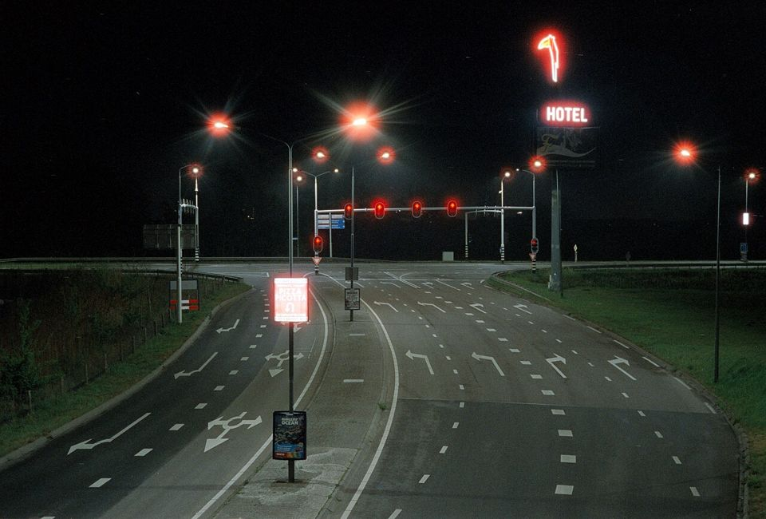
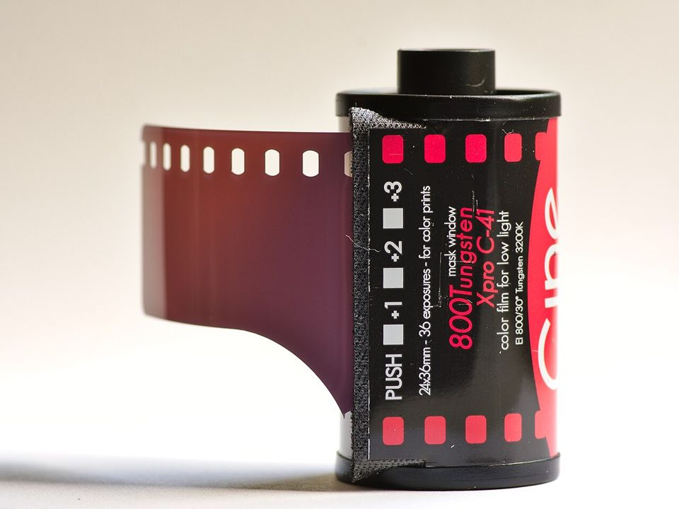

36 EXP. / 필름 비교 / CineStill 800T vs 400D
CineStill 800T vs 400D
같은 CineStill이지만 맞춰진 빛이 다릅니다. 800T는 밤·실내 조명(텅스텐)용, 400D는 낮 햇빛(주광)용입니다. 언제 주로 찍는지로 고르면 됩니다.


한눈에 비교
| CineStill 800T | CineStill 400D | |
|---|---|---|
| 감도 | ISO 800 | ISO 400 |
| 현상 | 컬러 네거티브 · C-41 | 컬러 네거티브 · C-41 |
| 판형 | 135 · 120 | 135 · 120 |
| 맞춰진 빛 | 텅스텐(실내 조명, 약 3200K) | 주광(햇빛) |
| 낮에 찍으면 | 전체가 파랗게 나옴 → 85·81 필터를 쓰거나 EI 400~500으로 | 그대로 자연스러운 색 |
| 밤에 찍으면 | 가로등·네온 색이 자연스럽고 붉은 번짐이 상징 | 조명 아래에서는 노랗게 기울 수 있음 |
| 감도 범위(공식) | 푸시 없이 EI 200~1000 | 푸시 없이 EI 200~800, 3스톱 푸시까지 |
| 헐레이션(빛 번짐) | 강한 광원 주위로 붉게 번짐 | 초점 맞은 과다 노출 부분에 생길 수 있음 |
| 가격 | $17.99 | $17.99 |
이럴 때 고르세요
- CineStill 800T
- 밤 산책, 네온·가로등이 있는 도시, 실내 조명 아래 사진
- CineStill 400D
- 맑은 날 여행, 야외 인물, 낮에 영화 같은 색감을 원할 때
자세한 차이
가장 큰 차이는 색온도(필름이 하얗게 보이도록 맞춰진 빛의 색)입니다. 800T는 실내 전구 빛에 맞춰져 있어 밤 도시에서 가장 자연스럽습니다. 400D는 햇빛에 맞춰져 있어 낮에 필터 없이 바로 씁니다.
800T를 낮에 쓰려면 CineStill은 85 또는 81 필터를 권합니다. 필터가 없으면 EI 400~500으로 놓고 찍는 방법도 안내합니다. 반대로 400D는 밤에도 푸시 현상으로 쓸 수 있지만, 조명 색이 그대로 남습니다.
둘 다 C-41로 현상해 일반 컬러 현상소에 맡길 수 있습니다. 아래 판매가 기준으로 두 필름의 가격은 같습니다. 다만 400D는 CineStill 공식 스토어에서 품절 표시였습니다(2026년 11월 13일 확인). 구매 전 재고를 확인해 주세요.
각 필름 자세히 보기
다른 비교
출처
- 가격: 위 표의 판매처 링크(2026년 10월 확인)
- 필름 특징: 이 사이트의 각 필름 가이드
- CineStill — 800Tungsten 35mm 공식 페이지 (2026년 11월 13일 확인)
- CineStill — 400Dynamic 35mm 공식 페이지 (2026년 11월 13일 확인)